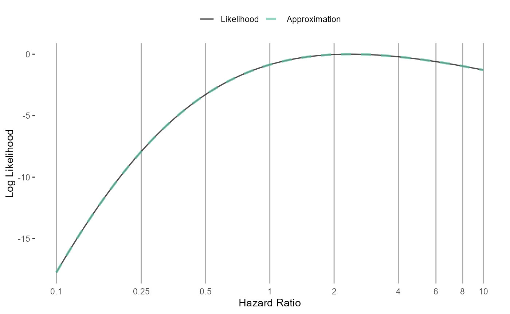
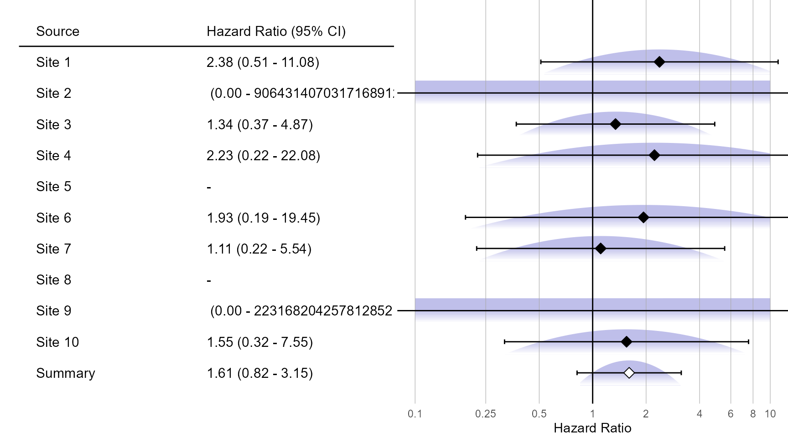
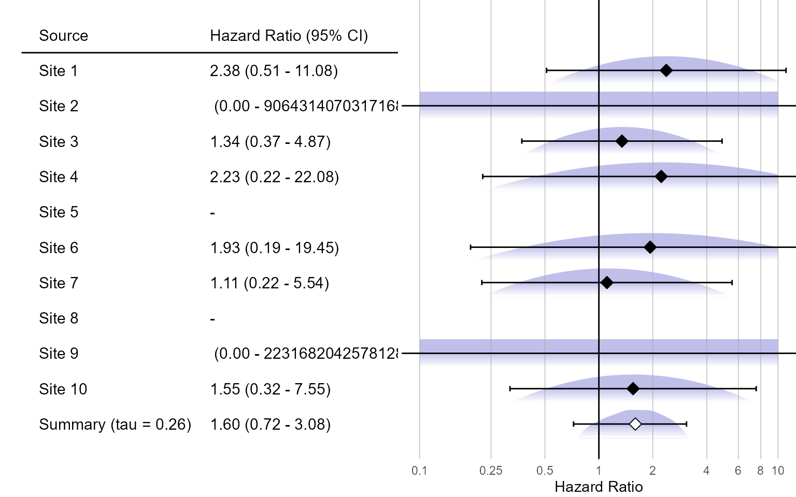

Code used in the video vignette
A short demonstration of the EvidenceSynthesis package
Martijn Schuemie
2023-05-08
Source:vignettes/VideoVignette.Rmd
VideoVignette.RmdThis vignette contains the code used in a short video on the EvidenceSynthesis package: https://youtu.be/dho7E97vpgQ.
Simulate data
Simulate 10 sites:
simulationSettings <- createSimulationSettings(
nSites = 10,
n = 10000,
treatedFraction = 0.8,
nStrata = 5,
hazardRatio = 2,
randomEffectSd = 0.5
)
set.seed(1)
populations <- simulatePopulations(simulationSettings)
head(populations[[1]])## rowId stratumId x time y
## 1 1 5 1 10 0
## 2 2 2 1 113 0
## 3 3 4 1 135 0
## 4 4 2 1 27 0
## 5 5 2 1 104 0
## 6 6 3 1 342 0## y
## x 0 1
## 0 1998 2
## 1 7981 19Fit a model locally
Assume we are at site 1:
library(Cyclops)
population <- populations[[1]]
cyclopsData <- createCyclopsData(Surv(time, y) ~ x + strata(stratumId),
data = population,
modelType = "cox"
)
cyclopsFit <- fitCyclopsModel(cyclopsData)
# Hazard ratio:
exp(coef(cyclopsFit))## x
## 2.378318## [1] 0.6888127 14.9382268Approximate the likelihood function at one site
Normal approximation
normalApproximation <- approximateLikelihood(
cyclopsFit = cyclopsFit,
parameter = "x",
approximation = "normal"
)
normalApproximation## rr ci95Lb ci95Ub logRr seLogRr
## x 2.378318 0.6888127 14.93823 0.8663934 0.7848893
plotLikelihoodFit(
approximation = normalApproximation,
cyclopsFit = cyclopsFit,
parameter = "x"
)## Detected data following normal distributionAdaptive approximation
approximation <- approximateLikelihood(
cyclopsFit = cyclopsFit,
parameter = "x",
approximation = "adaptive grid",
bounds = c(log(0.1), log(10))
)
head(approximation)## # A tibble: 6 x 2
## point value
## <dbl> <dbl>
## 1 -2.30 -156.
## 2 -2.29 -156.
## 3 -2.27 -156.
## 4 -2.25 -155.
## 5 -2.24 -155.
## 6 -2.22 -155.
plotLikelihoodFit(
approximation = approximation,
cyclopsFit = cyclopsFit,
parameter = "x"
)## Detected data following adaptive grid distribution
Approximate at all sites
fitModelInDatabase <- function(population, approximation) {
cyclopsData <- createCyclopsData(Surv(time, y) ~ x + strata(stratumId),
data = population,
modelType = "cox"
)
cyclopsFit <- fitCyclopsModel(cyclopsData)
approximation <- approximateLikelihood(cyclopsFit,
parameter = "x",
approximation = approximation
)
return(approximation)
}
adaptiveGridApproximations <- lapply(
X = populations,
FUN = fitModelInDatabase,
approximation = "adaptive grid"
)
normalApproximations <- lapply(
X = populations,
FUN = fitModelInDatabase,
approximation = "normal"
)
normalApproximations <- do.call(rbind, (normalApproximations))Synthesize evidence
Fixed-effects
Gold standard (pooling data):
fixedFxPooled <- computeFixedEffectMetaAnalysis(populations)
fixedFxPooled## rr lb ub logRr seLogRr
## x 2.432933 1.370034 4.800644 0.8890975 0.319882Normal approximation:
fixedFxNormal <- computeFixedEffectMetaAnalysis(normalApproximations)## Warning: Estimate(s) with NA seLogRr detected. Removing before computing
## meta-analysis.
fixedFxNormal## rr lb ub logRr seLogRr
## 1 1.605267 0.8168054 3.154828 0.4732898 0.3447228Adaptive grid approximation:
fixedFxAdaptiveGrid <- computeFixedEffectMetaAnalysis(adaptiveGridApproximations)
fixedFxAdaptiveGrid## rr lb ub logRr seLogRr
## 1 2.448437 1.376857 4.792428 0.8954498 0.3181777Visualization
Normal approximation:
plotMetaAnalysisForest(
data = normalApproximations,
labels = paste("Site", 1:10),
estimate = fixedFxNormal,
xLabel = "Hazard Ratio"
)
Adaptive grid approximation:
plotMetaAnalysisForest(
data = adaptiveGridApproximations,
labels = paste("Site", 1:10),
estimate = fixedFxAdaptiveGrid,
xLabel = "Hazard Ratio"
)Random-effects
Gold standard (pooling data):
randomFxPooled <- computeBayesianMetaAnalysis(populations)
exp(randomFxPooled[, 1:3])## mu mu95Lb mu95Ub
## 1 2.594023 1.326203 5.272257Normal approximation:
randomFxNormal <- computeBayesianMetaAnalysis(normalApproximations)## Warning: Estimate(s) with NA seLogRr detected. Removing before computing
## meta-analysis.
exp(randomFxNormal[, 1:3])## mu mu95Lb mu95Ub
## 1 1.55483 0.7732428 3.254443Adaptive grid approximation:
randomFxAdaptiveGrid <- computeBayesianMetaAnalysis(adaptiveGridApproximations)
exp(randomFxAdaptiveGrid[, 1:3])## mu mu95Lb mu95Ub
## 1 2.66668 1.329153 5.255041Visualization
Normal approximation:
plotMetaAnalysisForest(
data = normalApproximations,
labels = paste("Site", 1:10),
estimate = randomFxNormal,
xLabel = "Hazard Ratio"
)
Adaptive grid approximation:
plotMetaAnalysisForest(
data = adaptiveGridApproximations,
labels = paste("Site", 1:10),
estimate = randomFxAdaptiveGrid,
xLabel = "Hazard Ratio"
)